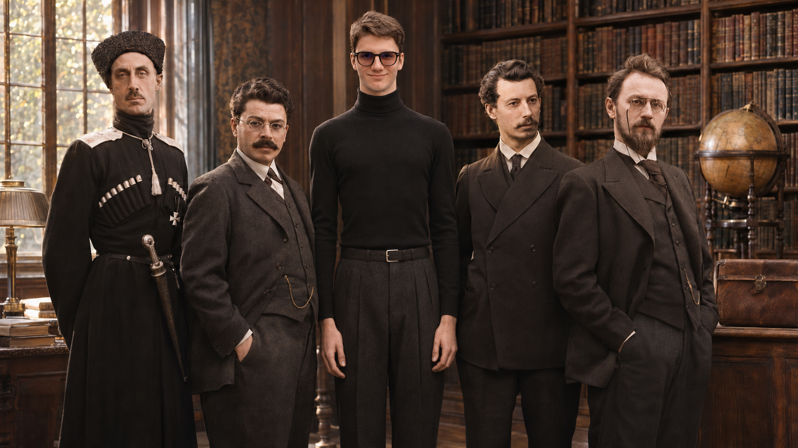

Практическая работа · 14 ноябряИзображение создано с помощью ИИ. Художественная реконструкция вымышленной встречи; документальные портреты — в презентации.
Россия за пределами России
Четыре человека, чьи жизни изменили революция и Гражданская война. Военачальник, критик, хирург и геолог — их путь из России и работа в эмиграции.
Четыре судьбы
в двенадцати слайдах
Листайте стрелками, выберите слайд в списке или откройте полноэкранный режим. На телефоне можно перелистывать свайпом.
Печать / PDF — в панели презентацииСкачать презентацию для просмотра без интернета ↓
Четыре профессии.
Четыре страны.
Все герои выбраны из энциклопедии Дома русского зарубежья. Нажмите на портрет, чтобы перейти к биографии.
Указаны основные профессии и современные названия стран захоронения. Архивные фотографии — из статей энциклопедии ДРЗ.
Эмиграция стала разрывом с родиной, но профессиональная и культурная жизнь русских людей продолжалась далеко за её пределами.
История, которую можно проверить
Биографии и маршруты проверены по письменным источникам. По Агафонову в справке ДРЗ указаны обстоятельства отъезда, но не установлена его конкретная личная причина; это различие сохранено на слайдах. Страны работы и экспедиционные поездки не приравниваются к постоянному проживанию.